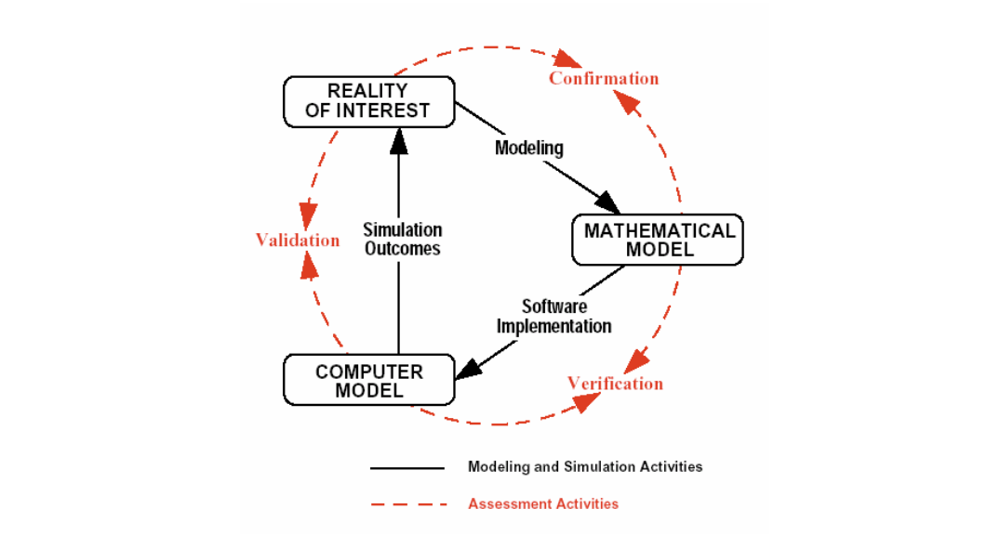
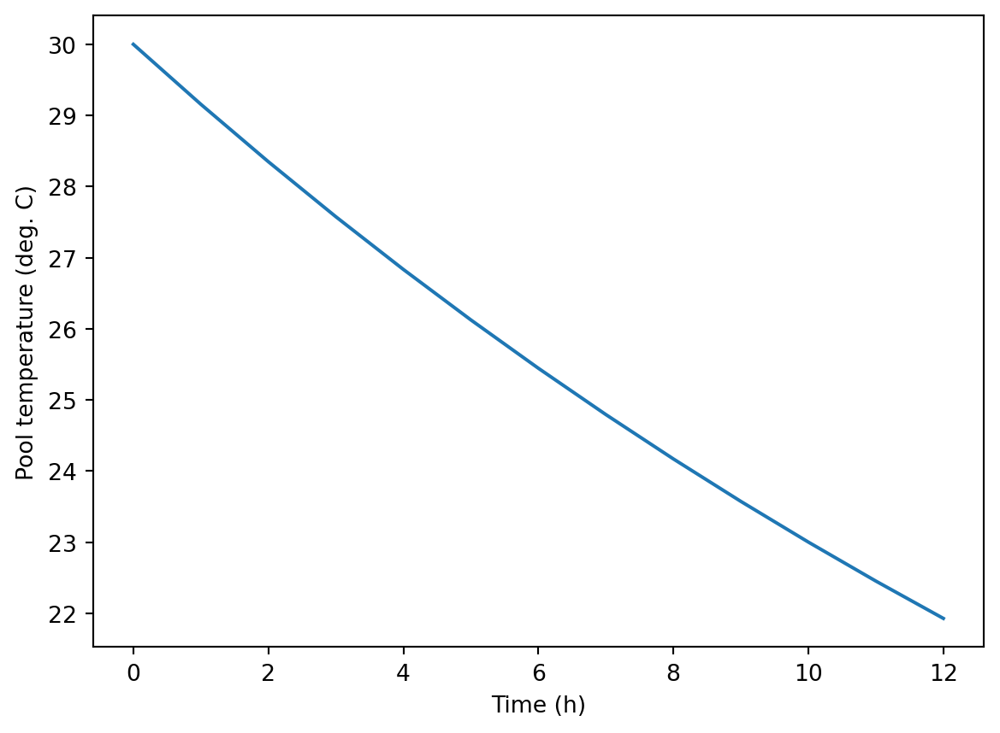
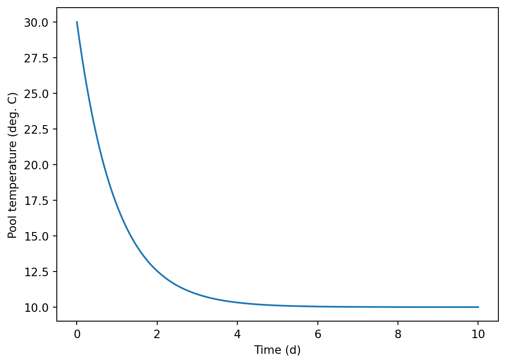
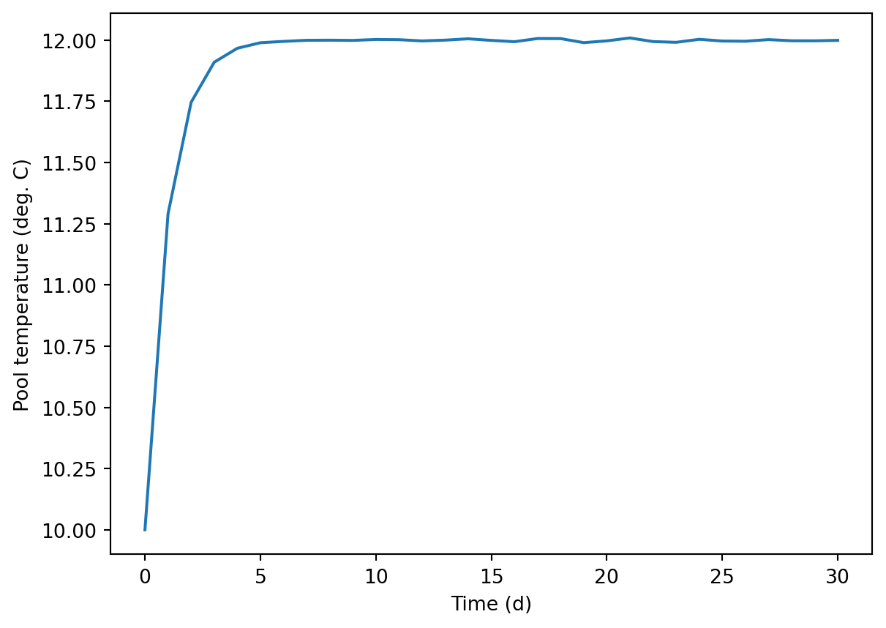
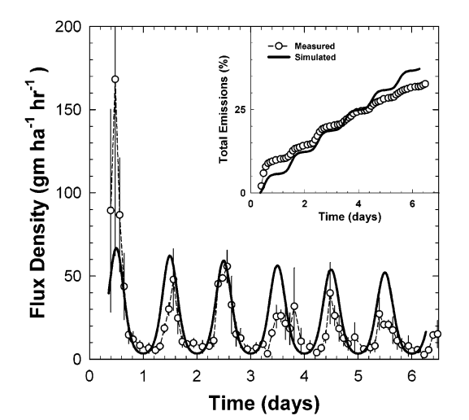
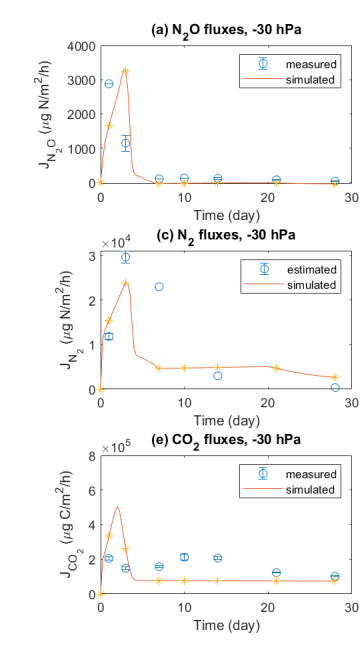

# m^2 * W/m^2 -> W
Q_solar = a_top * q_sol # Solar energy (W)9 Verification and Validation
The statistician George Box is famous for a quote that goes something like “all models are wrong, but some are useful”. Maybe he didn’t use that exact wording but the sentiment is definitely correct (see Box (1976) and Box (1987) for more). Indeed, both parts are true. Although model error cannot be completely eliminated, it can and should be evaluated and controlled. Verification and validation address the problem of model error, and are essential steps in the “modelling process”. They should be carried out before any confidence is placed in model predictions.
Verification is essentially ensuring that the mathematical model–developed through a model formulation process (Chapter 2)–has been programmed or implemented correctly. For us, that means checking that our Python code is correct. That alone does not ensure the model produces accurate predictions; of course any mathematical model of a real process or system has error too. It is common to find implementation errors through model verification. Finding these errors after a model has been applied, and after its predictions have affected policy is quite uncomfortable! They should be found and corrected before. A clear and explicit model formulation and careful programming can reduce implementation errors, but verification is always needed.
In contrast, validation is done by comparing model output to measurements from the system under study. Because validation is done after verification, code errors should already be eliminated, so any error seen in in validation can be interepreted as (most likely) coming from either model structure or parameter values.
The model developer needs to determine whether changes are needed and then which of these two is likely to improve the model.
Figure 9.1 shows where verification and validation fit in the model development process. The connections between the software model (your Python code) and, first, the mathematical model (what you developed through model formulation), and some measurement data, called the “reality of interest” in the figure.

One important point that model developers and users should both understand is that successful V&V does not prove that a model is correct. In fact, only model failure shows anything with any certainty: that a model is wrong. But V&V can provide evidence that the model is accurate enough for application. Both verification and validation are described in more detail in the sections below.
9.1 Verification
Verification is about making sure your model has been implemented correctly. So how exactly do you do that? You should carefully check model code for:
- accurate constitutive equations,
- accurate linking equations, and
- accurate mass or energy conservation, and
- consistent units.
When checking code, you should look for equations completeness and correctness by comparison to your model equations, written with pencil and paper or typed out somewhere. Of course, this presumes that the original model formulation and description are accurate. Unit consistency can be checked by entering units above terms in equations right in the model code, like this, where line 2 has the original model code and 1 a comment with units:
Additionally, careful model calls themselves can be used for verification. Check ultimate or limiting cases, where you have a clear expectation of what the model should show. If a simpler analytical model is available, its predictions can be compared to those from the more complex model under appropriate conditions. With this approach you can find problems without information on the causes. Then experience, model call “experiments”, and a check of the code can help identify the causes. Some will require digging into the model code itself from the start, stepping through the code as it is evaluated using breakpoint(), or exporting intermediate results for checking.
Model verification requires a good understanding of the underlying conceptual and mathematical models! Otherwise, how would you know what to expect?
Conservation can be checked by tracking cumulative transport. Cumulative transport can be added as a state variable by simply integrating the ODE for mass or energy flow at the domain boundaries The integrated cumulative totals can be compared it to the change in total energy or mass in the model domain for a conservation check.
9.2 Pool model code verification
Let’s use the swimming pool model as a demo for verification. First, the model code from the pool_mods module:
"""
File name: pool_mods.py
Author: Sasha D. Hafner and Frederik Dalby
Course: Modelling 2026
Description:
This module defines functions for modeling heat loss from a
swimming pool. BEWARE: This version includes deliberate **errors**
because it is meant to be used for a verification demo.
Usage:
See the file predictions.qmd for examples.
"""
# Load packages
import numpy as np
from scipy.integrate import solve_ivp
# Define model function
def dynmod(a_top,
a_wall,
depth,
q_sol,
u_top,
u_wall,
temp_air,
temp_sub,
flow_renew,
temp_renew,
temp_init,
times,
cp = 4180,
dens = 1000
):
"""
Dynamic model for heat loss from an outdoor swimming pool.
Parameters
----------
a_top : float
Area of pool water surface at the top (m2)
a_wall : float
Wall and floor area in contact with soil or substrate (m2)
depth : float
Pool depth (m)
q_sol : float
Global solar radiation flux (W/m2)
u_top : float
Overall heat transfer coefficient from the upper water surface (W/m2-K)
u_wall : float
Overall heat transfer coefficient for the walls and floor from water to substrate (W/m2-K)
temp_air : float
Constant air temperature (degree C)
temp_sub : float
Constant substrate temperature (degree C)
flow_renew : float
Flow rate of water cycling through pool (m3/s)
temp_renew : float
Temperature of heated water added to pool at rate of flow_renew (deg. C)
temp_init : float
Initial pool temperature (deg. C)
times : tuple, list, or array
Times for output (s)
cp : float
Specific heat capacity of water (J/kg-K)
dens : float
Density of water (kg/m3)
"""
# Define rates function
def rates(t, temp_pool):
# Net energy, expressed as positive for increase
# One nice things about numerical solutions is you are not required to simplify the governing equation.
# In fact it can be helpful to understand the different pathways to keep them separate
# Calculate heat flow (W) through individual pathways
# All are positive for heat flow in (this is arbitrary)
Q_solar = a_top * q_sol # Solar energy
Q_top = a_top * u_top * (temp_air - temp_pool) # Convection from top
Q_sub = a_wall * u_wall * (temp_sub - temp_pool) # Conduction to/from substrate (soil or whatever is there)
Q_renew = cp * dens * flow_renew * (temp_pool - temp_renew) # Net energy coming in from renewal water
# And sum them
Q_net = Q_solar + Q_top + Q_renew
# Express as temperature change
dtemp_dt = Q_net / (cp * dens * vol)
return dtemp_dt
# Total water volume (m3)
vol = a_top * depth
# Now solve with solve_ivp()
res = solve_ivp(rates, t_span = [min(times), max(times)],
y0 = [temp_init], t_eval = times
)
# Create a dictionary to hold results
out = {"t": res.t, "temp": res.y[0, :]}
return(out)And now some verification: Let’s start with a check of
- conservation, and
- constitutive equations.
During model formulation we came up with this energy conservation equation:
Rate of energy accumulation = solar + air/top + soil/substrate + renewalAll in W.
And the code has this:
Q_net = Q_solar + Q_top + Q_renewOK? Nope! We are missing energy transfer from soil/substrate. Checking the module code above shows it is actually calculated, just not used. So we can add it:
Q_net = Q_solar + Q_top + Q_sub + Q_renewNow for a check of the constitutive equations.
The code:
# Calculate heat flow (W) through individual pathways
# All are positive for heat flow in (this is arbitrary)
Q_solar = a_top * q_sol # Solar energy
Q_top = a_top * u_top * (temp_air - temp_pool) # Convection from top
Q_sub = a_wall * u_wall * (temp_sub - temp_pool) # Conduction to/from substrate (soil or whatever is there)
Q_renew = cp * dens * flow_renew * (temp_pool - temp_renew) # Net energy coming in from renewal waterThe check, where we have copied a single line a few times to think about it in some different ways
# Area * flux -> OK
Q_solar = a_top * q_sol # Solar energy
# CHTS = combined heat transfer coefficient
# Area * CHTC * delta T -> OK
Q_top = a_top * u_top * (temp_air - temp_pool) # Convection from top
# Area * ------flux------------------- -> OK
Q_top = a_top * u_top * (temp_air - temp_pool) # Convection from top
# High - low -> postitive -> heat transfer into pool -> OK
Q_top = a_top * u_top * (temp_air - temp_pool) # Convection from topNow some check of units. During actual V&V, we would need to check all equations. But here let’s focus on that same line of code from above as an example.
# Overall heat transfer coefficient from the upper water surface (W/m2-K)
# m^2 * W/m2-K * ----------K---------- -> W OK
Q_top = a_top * u_top * (temp_air - temp_pool) # Convection from topTo be sure that even this single line of code is correct, we have to check that the inputs a_top etc. have the correct units. These should be defined in the docstring. We see:
a_top : float
Area of pool water surface at the top (m2)
. . .
u_top : float
Overall heat transfer coefficient from the upper water surface (W/m2-K)
. . .
temp_air : float
Constant air temperature (degree C)Those three look fine, once we remember that a temperature difference is the same in \(\degC\) and K. Now, of course this doc string has no effect on the actual calculations carried out by the model, but it tells the user the units for the inputs. And if everything is correct up/back to here, the rest is up to the user.
Now the linking equation, starting with a conceptual check.
# temp change = energy in / (energy required for 1 K change in 1 kg * mass/vol * vol) -> seems OK
dtemp_dt = Q_net / (cp * dens * vol)And unit check.
# J/s / J/K-kg * kg/m3 * m3 -> K/s OK
dtemp_dt = Q_net / (cp * dens * vol)Compare to the information in the model function docstring:
cp : float
Specific heat capacity of water (J/kg-K)
dens : float
Density of water (kg/m3)All OK? Seems so, yes.
9.3 Verification with model calls
Next, let’s look at some model calls.
# Packages
import sys
sys.path.append('modules')
import numpy as np
import matplotlib.pyplot as plt
from importlib import reload
# Get out pool model functions (loading a module here)
# This will not load a new version!
import pool_mods as pm
# Use as needed (reload(pm) if module code is changed)
reload(pm)
# Set dimensions (all distances m, all areas m^2).
# Assume pool is 10 x 4 x 2 m.
length = 10
width = 4
depth = 2
a_top = length * width
a_wall = 2 * (length + width) * depth + a_top
# And a demo model call
pred01 = pm.dynmod(a_top = a_top,
a_wall = a_wall,
depth = depth,
q_sol = 0,
u_top = 100,
u_wall = 3,
temp_air = 10,
temp_sub = 10,
flow_renew = 0,
temp_renew = 0,
temp_init = 30,
times = np.arange(0, 12 * 3600 + 3600, 3600)
)
# Check results
pred01
pred01['temp']
# And
plt.plot(pred01['t'] / 3600, pred01['temp'])
plt.xlabel('Time (h)')
plt.ylabel('Pool temperature (deg. C)')Text(0, 0.5, 'Pool temperature (deg. C)')
Let’s think about steady-state. Should there be a steady state condition? Sure! Do we see one above? No. Why not?
How about if we run the model for 10 days?
# And a demo model call
pred01 = pm.dynmod(a_top = a_top,
a_wall = a_wall,
depth = depth,
q_sol = 0,
u_top = 100,
u_wall = 3,
temp_air = 10,
temp_sub = 10,
flow_renew = 0,
temp_renew = 0,
temp_init = 30,
times = np.arange(0, 10 * 24 * 3600 + 3600, 3600)
)
plt.plot(pred01['t'] / 86400, pred01['temp'])
plt.xlabel('Time (d)')
plt.ylabel('Pool temperature (deg. C)')Text(0, 0.5, 'Pool temperature (deg. C)')
Ah, just a matter of time, right? And does that steady-state (or equilibrium?) temperature match expectations?
We have no solar radiation in these scenarios. With the sun shining, the pool water should warm above ambient temperature. But as the water warms above air temperature, it will lose heat at a higher and higher rate, until the fixed rate of heat gain from the sun matches the variable rate of heat loss to air. Do we see that behavior?
# Let's add 200 W/m2 of sun, keep environment at 10, and see
pred02 = pm.dynmod(a_top = a_top,
a_wall = a_wall,
depth = depth,
q_sol = 200,
u_top = 100,
u_wall = 3,
temp_air = 10,
temp_sub = 10,
flow_renew = 0,
temp_renew = 0,
temp_init = 10,
times = np.arange(0, 12 * 3600 + 3600, 3600)
)
pred02
# Run it for a long time
pred03 = pm.dynmod(a_top = a_top,
a_wall = a_wall,
depth = depth,
q_sol = 200,
u_top = 100,
u_wall = 3,
temp_air = 10,
temp_sub = 10,
flow_renew = 0,
temp_renew = 0,
temp_init = 10,
times = np.arange(0, 30 * 86400 + 86400, 86400)
)
pred03['temp']
plt.plot(pred03['t'] / 86400, pred03['temp'])
plt.xlabel('Time (d)')
plt.ylabel('Pool temperature (deg. C)')Text(0, 0.5, 'Pool temperature (deg. C)')
As expected? Higher or lower than ambient? What about the oscillations?
Does it match steady state model?
pm.ssmod(a_top = a_top,
a_wall = a_wall,
depth = depth,
q_sol = 200,
u_top = 100,
u_wall = 3,
temp_air = 10,
temp_sub = 10,
flow_renew = 0,
temp_renew = 0
)
pred03['temp'][10:]array([12.00247833, 12.00161579, 11.99649143, 11.99975907, 12.00514947,
11.9987296 , 11.99329821, 12.00634821, 12.00597988, 11.98946407,
11.99674094, 12.0085892 , 11.99392382, 11.99077643, 12.00309685,
11.99612152, 11.99523787, 12.00195156, 11.99719118, 11.99694194,
11.99888609])Hmmm. . . does it? Is there an error in the model?
Try renewal. If we are interested in steady state, we might just return a few times
pm.dynmod(a_top = a_top,
a_wall = a_wall,
depth = depth,
q_sol = 0,
u_top = 100,
u_wall = 3,
temp_air = 10,
temp_sub = 10,
flow_renew = 0.1,
temp_renew = 30,
temp_init = 10,
times = [0, 3600, 86400, 10*86400]
)/home/sasha/repos/modeling-py-book/pool_mods.py:89: RuntimeWarning: overflow encountered in multiply
Q_renew = cp * dens * flow_renew * (temp_pool - temp_renew) # Net energy coming in from renewal water
/home/sasha/repos/modeling-py-book/pool_mods.py:92: RuntimeWarning: invalid value encountered in add
Q_net = Q_solar + Q_top + Q_renew
/home/sasha/repos/pyenv/lib/python3.12/site-packages/scipy/integrate/_ivp/rk.py:66: RuntimeWarning: invalid value encountered in dot
y_new = y + h * np.dot(K[:-1].T, B)
/home/sasha/repos/pyenv/lib/python3.12/site-packages/scipy/integrate/_ivp/rk.py:106: RuntimeWarning: invalid value encountered in dot
return np.dot(K.T, self.E) * h{'t': array([ 0, 3600, 86400]),
'temp': array([ 1.00000000e+01, -1.71009143e+03, -5.70771567e+47])}Big problem! We get massively negative temperature Let’s dig into this, first with some more model calls Think about it . . . Try smaller delta T and shorter time to slow down heat transfer and time, in a sense
pm.dynmod(a_top = a_top,
a_wall = a_wall,
depth = depth,
q_sol = 0,
u_top = 100,
u_wall = 3,
temp_air = 10,
temp_sub = 10,
flow_renew = 0.1,
temp_renew = 10.1,
temp_init = 10,
times = np.arange(0, 101)
){'t': array([ 0, 1, 2, 3, 4, 5, 6, 7, 8, 9, 10, 11, 12,
13, 14, 15, 16, 17, 18, 19, 20, 21, 22, 23, 24, 25,
26, 27, 28, 29, 30, 31, 32, 33, 34, 35, 36, 37, 38,
39, 40, 41, 42, 43, 44, 45, 46, 47, 48, 49, 50, 51,
52, 53, 54, 55, 56, 57, 58, 59, 60, 61, 62, 63, 64,
65, 66, 67, 68, 69, 70, 71, 72, 73, 74, 75, 76, 77,
78, 79, 80, 81, 82, 83, 84, 85, 86, 87, 88, 89, 90,
91, 92, 93, 94, 95, 96, 97, 98, 99, 100]),
'temp': array([10. , 9.99987492, 9.99974969, 9.9996243 , 9.99949876,
9.99937306, 9.99924721, 9.9991212 , 9.99899503, 9.99886871,
9.99874223, 9.99861559, 9.9984888 , 9.99836185, 9.99823475,
9.99810748, 9.99798006, 9.99785248, 9.99772474, 9.99759685,
9.99746879, 9.99734058, 9.99721221, 9.99708368, 9.99695499,
9.99682614, 9.99669713, 9.99656796, 9.99643863, 9.99630914,
9.99617949, 9.99604968, 9.99591971, 9.99578958, 9.99565928,
9.99552883, 9.99539821, 9.99526743, 9.99513649, 9.99500539,
9.99487413, 9.9947427 , 9.99461111, 9.99447936, 9.99434744,
9.99421536, 9.99408312, 9.99395071, 9.99381814, 9.9936854 ,
9.9935525 , 9.99341944, 9.99328621, 9.99315281, 9.99301925,
9.99288553, 9.99275164, 9.99261758, 9.99248336, 9.99234897,
9.99221441, 9.99207969, 9.9919448 , 9.99180975, 9.99167452,
9.99153913, 9.99140357, 9.99126785, 9.99113195, 9.99099589,
9.99085966, 9.99072326, 9.99058669, 9.99044995, 9.99031304,
9.99017596, 9.99003871, 9.9899013 , 9.98976371, 9.98962595,
9.98948802, 9.98934992, 9.98921165, 9.98907321, 9.9889346 ,
9.98879581, 9.98865685, 9.98851772, 9.98837842, 9.98823895,
9.9880993 , 9.98795948, 9.98781949, 9.98767932, 9.98753898,
9.98739847, 9.98725778, 9.98711692, 9.98697588, 9.98683467,
9.98669328])}Adjust the time a bit. . . What does that tell us?
Try breakpoint() to see what is happening. Let’s edit the module like this, adding breakpoint() to a line where we can check the numeric value of Q_renew, and save it.
...
# Define rates function
def rates(t, temp_pool):
# Net energy, expressed as positive for increase
# One nice things about numerical solutions is you are not required to simplify the governing equation.
# In fact it can be helpful to understand the different pathways to keep them separate
# Calculate heat flow (W) through individual pathways
# All are positive for heat flow in (this is arbitrary)
Q_solar = a_top * q_sol # Solar energy
Q_top = a_top * u_top * (temp_air - temp_pool) # Convection from top
Q_sub = a_wall * u_wall * (temp_sub - temp_pool) # Conduction to/from substrate (soil or whatever is there)
Q_renew = cp * dens * flow_renew * (temp_pool - temp_renew) # Net energy coming in from renewal water
breakpoint()
# And sum them
Q_net = Q_solar + Q_top + Q_renew
# Express as temperature change
dtemp_dt = Q_net / (cp * dens * vol)
return dtemp_dt
...Then we need to reload the module and call the function, like this.
reload(pm)
pm.dynmod(a_top = a_top,
a_wall = a_wall,
depth = depth,
q_sol = 0,
u_top = 100,
u_wall = 3,
temp_air = 10,
temp_sub = 10,
flow_renew = 0.1,
temp_renew = 10.1,
temp_init = 10,
times = np.arange(0, 101)
)
# Check:
Q_renew
# Negative or positive?
temp_pool
temp_renewIn the interactive debugging session, we can check the value of any existing object by typing its name. So let’s see what Q_renew looks like.
> pool_mods.py(94) rates()
-> Q_net = Q_solar + Q_top + Q_renew
(Pdb) Q_renew
array([-41800.])
(Pdb) temp_pool
array([10.])
(Pdb) temp_renew
10.1So with a value of temp_renew higher than temp_pool, we get a negative value for Q_renew, while the comment at the top of that block (and the other code) shows that all are positive for heat flow in (this is arbitrary). So that is a mistake!
See module code in rates() in the relevant part of the pool_mods.py module.
Q_renew = cp * dens * flow_renew * (temp_pool - temp_renew) # Net energy coming in from renewal waterIt should look like this.
Q_renew = cp * dens * flow_renew * (temp_pool - temp_renew) # Net energy coming in from renewal waterThere are many ways that model calls can be used for model verification, but they depend on the specifics of the model. Other possible checks here could include:
- Correct steady-state predictions with solar radiation and other changes to inputs (possibly changed independently or stepwise)
- Correct qualitative effects of changes to inputs (more or less radiation, higher or lower substrate temperature or resistance)
For a quantitative check of energy balance, we can add cumulative heat transfer as a state variable. This is done in the dynmod_pp() function defined in the same module. The function is copied below as well.
# Define a model with cumulative transport state variables
# pp is for ++, as in more than the original model :)
def dynmod_pp(a_top,
a_wall,
depth,
q_sol,
u_top,
u_wall,
temp_air,
temp_sub,
flow_renew,
temp_renew,
temp_init,
times,
cp = 4180,
dens = 1000
):
"""
Dynamic model for heat loss from an outdoor swimming pool.
Parameters
----------
a_top : float
Area of pool water surface at the top (m2)
...
"""
# Define rates function
def rates(t, ys):
# Extract pool temperature from the array of ys
temp_pool = ys[0]
# Net energy, expressed as positive for increase
# One nice things about numerical solutions is you are not required to simplify the governing equation.
# In fact it can be helpful to understand the different pathways to keep them separate
# Calculate heat flow (W) through individual pathways
# All are positive for heat flow in (this is arbitrary)
Q_solar = a_top * q_sol # Solar energy
Q_top = a_top * u_top * (temp_air - temp_pool) # Convection from top
Q_sub = a_wall * u_wall * (temp_sub - temp_pool) # Conduction to/from substrate (soil or whatever is there)
Q_renew = cp * dens * flow_renew * (temp_pool - temp_renew) # Net energy coming in from renewal water
# And sum them
Q_net = Q_solar + Q_top + Q_renew
# Express as temperature change
dtemp_dt = Q_net / (cp * dens * vol)
# Also package the heat transfer rates (W)
Qs = np.array([Q_solar, Q_top, Q_sub, Q_renew])
return np.append(dtemp_dt, Qs)
# Total water volume (m3)
vol = a_top * depth
# Now solve with solve_ivp()
# See 0s for cumulative heat transfer
res = solve_ivp(rates, t_span = [min(times), max(times)],
y0 = [temp_init, 0, 0, 0, 0], t_eval = times
)
# Create a dictionary to hold results
out = {
"t": res.t,
"temp": res.y[0, :],
"h_solar": res.y[1, :],
"h_top": res.y[2, :],
"h_sub": res.y[3, :],
"h_renew": res.y[4, :]
}
return(out)Let’s try this new version
reload(pm)
pm.dynmod_pp(a_top = a_top,
a_wall = a_wall,
depth = depth,
q_sol = 0,
u_top = 100,
u_wall = 3,
temp_air = 10,
temp_sub = 10,
flow_renew = 0.1,
temp_renew = 10.1,
temp_init = 10,
times = np.arange(0, 10)
){'t': array([0, 1, 2, 3, 4, 5, 6, 7, 8, 9]),
'temp': array([10. , 9.99987492, 9.99974969, 9.9996243 , 9.99949876,
9.99937306, 9.99924721, 9.9991212 , 9.99899503, 9.99886871]),
'h_solar': array([0., 0., 0., 0., 0., 0., 0., 0., 0., 0.]),
'h_top': array([ 0. , 0.2501032 , 1.00082587, 2.25278817, 4.00661106,
6.26291622, 9.02232614, 12.28546406, 16.05295402, 20.3254208 ]),
'h_sub': array([0. , 0.01800743, 0.07205946, 0.16220075, 0.288476 ,
0.45092997, 0.64960748, 0.88455341, 1.15581269, 1.4634303 ]),
'h_renew': array([ 0. , -41826.13578459, -83704.58630342,
-125635.41636426, -167618.69085529, -209654.4747447 ,
-251742.83308132, -293883.83099469, -336077.53369509,
-378324.00647352])}See huge negative h_renew (J). Wrong sign! And a flow of 0.1 \(\mcbps\) is probably high for a pool that is 10 x 4 x 2 = 80 \(\mcb\). And do you see how these cumulative transport state variables can be useful?
9.4 Validation
Validation is about assessing the accuracy of the model by comparison to the real world. A “validated” model cannot be assumed to be accurate under all possible conditions, but it can show that the model is accurate enough for its intended use. Take a look at Figure 9.1 for a reminder of where validation fits into the modelling process.
Requirements:
- Measurements and model outputs must be for the same thing (including time)
- Application or conditions should be of interest (validation is specific)
Selection of a variable for validation depends on what is available and what is useful. In some cases we won’t have measurements of the arguably most important state variables in a model. For example, the active microbial biomass may be an important state variable in a microbial model, but it can be very difficult or impossible to measure. Instead, the concentration of a substrate or product may be the only variable available. Therefore, validation must be based on these. It is entirely possible, and probably often the case, that a model could show suitable validation for one variable but actually be totally wrong for another.
Even when a variable has been identified, there are usually multiple ways that validation could be done. We will consider a few graphical (visual) approaches and some quantitative options here.
9.5 Graphical validation
Plots can be useful for comparing the overall goodness of fit between a model output and mesurements, as well as details about particular issues. Here are the approaches we will explore:
- both over time or some other input variable or parameter to show both overall comparison and response to the input,
- residuals to show trends in bias, and
- scatterplot showing correlation.
For a dynamic model, it usually makes sense to do validation over time. Figure 9.2 below shows an example for a model of pesticide volatilization from a soil surface. The main plot there shows volatilization rate as a flux. We can see a few things:
- The general level of model predictions is similar to measurements. There is no major overall bias.
- Both model and measurements show a clear diurnal pattern. (Presumably this is driven by diurnal temperature variation, and if we had developed or applied this model, this is a detail we should be aware of!)
- The model underestimates the magnitude of the decline in volatilization rate over time, as well as the decline in the amplitude of the diurnal pattern.

Do you see any other interesting results?
The smaller inset plot in Figure 9.2 shows another variable, cumulative emission or volatilization. This variable is calculated directly from measured volatilization rate by some kind of numerical integration. For example, calculating the area under the dashed line in the main plot would be a kind of trapezoidal integration. While both variables may be interesting from a validation perspective, it is important to understand that they are not independent.
The validation shown in Figure 9.3 includes multiple independent response variables. Model output is from a soil microbiology model. The multiple response variables are the flux of \(\ce{N2O}\), \(\ce{N2}\), and \(\ce{CO2}\). The use of multiple variables can provide more information about problems with a model. For example, Figure 9.3 shows that while the model predicts nearly the same pattern for all three gases, measurements show a relatively flat response in \(\ce{CO2}\). This suggests that the model processes responsible for \(\ce{CO2}\) production may be structurally wrong.

Comparing measurements and model output over time has limitations. Especially for simple models, we may only see if the model predicts a higher or lower rate of change. Plotting state variable values vs. other model inputs can provide insight into why a model fails.
9.5.1 Model fit statistics
Model fit statistics summarize the correspondence between measurements and model output. Several statistics exist, but we’ll focus on three that are useful or common.
Mean bias error (MBE) is the average difference between model output and measurements.
\[ MBE = \frac{ \sum_{i=1}^{N} x_{p,i} -x_{m,i}} {N} \tag{9.1}\]
9.6 Problems
I. Verification
In this exercise you will work with a version of the ammonia volatilization model from the first mini-project. This document provides some details, the amm_concept_model.pdf has more, and for even more, see the solutions to that mini-project. Remember that you need to have a good understanding of the underlying conceptual and mathematical models in order to verify a computer model! So make use of those documents.
You’ll use the dynmod() function defined in the amm_mods.py file in the same subdirectory as this document. The amm_mods.py file is a module that defines the model as a Python function called dynmod(). The script amm_demo.py has a short demonstration.
The model simulates total ammonia nitrogen (TAN, the sum of free ammonia (NH3) and ammonium (NH4+)) in manure in a storage tank. It includes continuous addition and removal of manure at a fixed rate, so the volume of manure in the tank does not change. But TAN is lost through volatilization of ammonia from the surface.
Can you verify the model following the approach we went through in class? Save your work in a Python script and a text file, or really in any form that you think is appropriate. If you prefer commenting in the module file amm_mods.py directly, that is fine.
If you struggle to work with the volume-normalized variables and expressions, you can use the second model function ddynmod(), named for double dynamic model because can also simulation tank volume dynamics. It does not use volume-normalize values, because the volume is variable over time. In that case you probably want to set the manure pumping rate (flow) in and out to the same value for simplicity.
For more details on the mass balance and constitutive equations, see amm_concept_model.pdf.
- Validation
In this exercise you will work with a 1D diffusion model. You will get some practice in verification of conservation with 1D models and try model validation. There are also two optional questions on some different ways to implement and verify (program) 1D models.
The conceptual model is quite simple. We have a column with some solute (NaCl for example, which is what was used in the measurements) diffusing from one end to the other through water. We can represent the conceptual model it with text symbols:
--------------------------
| |
c_l | | c_r
bc[0] | | bc[0]
| |
--------------------------
x -->Both boundaries, at the left and right, have fixed concentrations. And there is only one phase–an aqueous phase that is somehow stagnant (or assumed to be)! This same model could also be used for a semi-infinite plane.
The model is implemented in the function diff1D() which is defined in the diff_mod.py module. Check the docstring and, if needed, rates() to see exactly what diff1D() returns before starting.
Qualitatively describe what you expect this model predict, both after short and then long periods of time.
Given what you know about Fick’s law of diffusion at steady-state in a plane wall, predict the steady-state flux of the solute without the model, and then compare your expected value to model predictions.
Can you use the output from the
diff1D()to verify implementation of mass balance in the model? Check the function docstring (look at the module file contents or runhelp(diff1D)in Python) to check function parameters and outputs. This is meant to be a quick check, and not a detailed verification, but it is still good practice to keep a record of your function calls, output, and interpretation. That could be done in many ways, including a Markdown document or*.txtfile with code and output (manually pasted in), or an MS Word file, a Jupyter Notebook file, or a Quarto Markdown (q.md) file.See the data file
col_salt.csvfor some (fabricated) measurements of the total salt (NaCl here) mass within a 0.1 m long column with a diameter of 0.02 m. Fixed salt concentrations at the boundaries were 36 kg/m3 at the left and zero at the right. Use the measurements to validate the model graphically and with relevant model fit statistics. The diffusivity of NaCl in water is known to be around 1.6E-9 m2/s. What do you think about the accuracy of the model? Hint: Be careful with units and variables. You have to convert model predictions to the variable that was measured.
Optional: 5. You may have noticed that the cumulative mass transfer at the left and right boundaries are both positive for flow to the right. Create a new version of the diff1D() function and change this feature, so that both terms are positive for mass going into the column (model domain). Make sure you give the new function a good name. Save it in the same module as the original. Now repeat your mass mass balance verification with this new function.
Box, George E. P. 1976. “Science and Statistics.” Journal of the American Statistical Association 71 (356): 791–99. https://doi.org/10.2307/2286841.
———. 1987. Empirical Model-Building and Response Surfaces. Wiley.
Yates, S. R. 2006. “Simulating Herbicide Volatilization from Bare Soil Affected by Atmospheric Conditions and Limited Solubility in Water.” Environmental Science and Technology 40: 6963–68.
Zhang, Jie, Elisabeth Larsen Kolstad, Wenxin Zhang, Iris Vogeler, and Søren O. Petersen. 2023. “Modeling Coupled Nitrificationdenitrification in Soil with an Organic Hotspot.” Biogeosciences 20 (September): 3895–3917. https://doi.org/10.5194/bg-20-3895-2023.